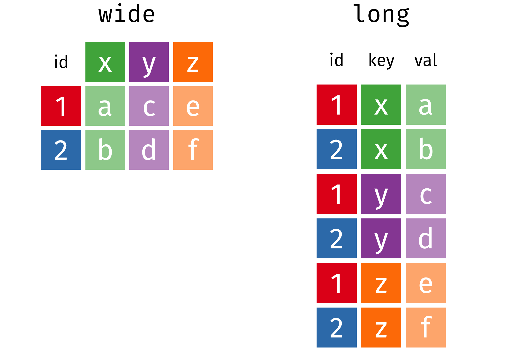
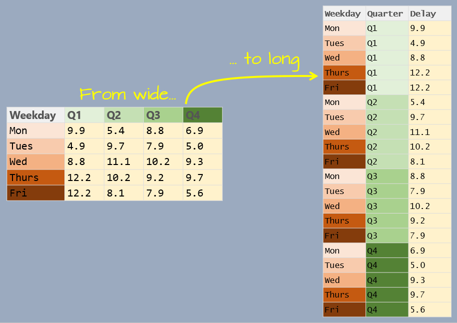
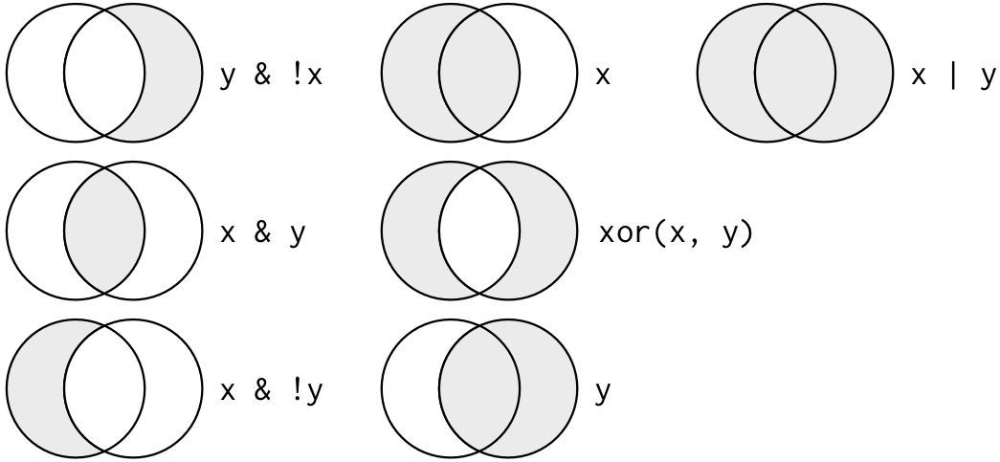

# A tibble: 3 × 2
name band
<chr> <chr>
1 Mick Stones
2 John Beatles
3 Paul BeatlesData preparation and wrangling
Business Data Analytics, BST851
Prof. Bahman Rostami-Tabar, Cardiff University
Learning objectives
By the end of this session, you are able to:
Describe why and when we use data wrangling
Describe tidy data and argue why it is important when doing data analytitcs using tidyverse packages in R
Reshape and join different datasets
Transform data using different functions in dplyr package

What is data wrangling?
Reshaping or transforming raw data into a format that’s easier to work with later (for visualisation, modelling, reporting).
Real-world data rarely arrives in the perfect form for analysis.
You’ll often create new variables, compute summaries, rename variables, or reorder observations to make work easier.
Tidy data (structure, not cleanliness)
Tidy data follows three simple rules:
Each variable has its own column.
Each observation has its own row.
Each value has its own cell.
Tidy data is the native shape that tidyverse tools expect.

Why do we need data to be in Tidy format?
For the functions in
tidyverseto work, your data needs to be in atidy formatThis doesn’t mean that it’s clean, it refers to the structure of the data
All the packages in the tidyverse, and its extensions work best with tidy data; that why it’s called that!
Wide vs. long data
Example of tidy data

Moving from wide to long
You can use pivot_longer() & pivot_wider() from tidyr package in tidyverse to move from wider to longer and viceversa.

Joins multiple datasets
Joins: combine tables by keys
Use joins to add columns from one table to another.
# A tibble: 3 × 3
name band plays
<chr> <chr> <chr>
1 Mick Stones <NA>
2 John Beatles guitar
3 Paul Beatles bass Different joins keep different cases:
left_join(x, y): keep all rows ofx, match fromy.right_join(x, y): keep all rows ofy, match fromx.inner_join(x, y): keep matches only.full_join(x, y): keep rows ofy, or of both.
dplyr package
dplyr is a package for data transformation/manipulation
There are many fucntions from this package that help you to transform data:
Here, we start by looking at 7 useful functions that you’ll typically use when transforming data.
What dplyr functions do?
Pick rows/observations with
filter()Pick columns/variables with
select()Sort rows with
arrange()Make new columns/variables with
mutate()Make group summaries with
group_byand thensummarize()Count things:
count()
How these functions work?
Every dplyr verb follows the same pattern:
The first argument is always the data you want to transform in the form of a
tibble(i.e. kind of table)Following that, it take one or multiple
conditionand the function always returns a
tibble
Lets’ use dplyr functions with `gapmider data
gapminder data
# A tibble: 42,455 × 6
country year lex gdp_pcap pop continent
<chr> <dbl> <dbl> <dbl> <dbl> <chr>
1 Afghanistan 1800 28.2 481 3280000 Asia
2 Afghanistan 1801 28.2 481 3280000 Asia
3 Afghanistan 1802 28.2 481 3280000 Asia
4 Afghanistan 1803 28.2 481 3280000 Asia
5 Afghanistan 1804 28.2 481 3280000 Asia
6 Afghanistan 1805 28.2 481 3280000 Asia
7 Afghanistan 1806 28.1 481 3280000 Asia
8 Afghanistan 1807 28.1 481 3280000 Asia
9 Afghanistan 1808 28.1 481 3280000 Asia
10 Afghanistan 1809 28.1 481 3280000 Asia
# ℹ 42,445 more rowsPipes: write code like you think
The pipe operator passes the left-hand object into the first argument of the right-hand function.
|>, The shortkey isCtr+Shift+M
Picking rows with filter()
Take the gapminder dataset and return all rows/observations where country is equal to Denmark:
# A tibble: 225 × 6
country year lex gdp_pcap pop continent
<chr> <dbl> <dbl> <dbl> <dbl> <chr>
1 Denmark 1800 37.4 2040 1000000 Europe
2 Denmark 1801 38.5 2050 1010000 Europe
3 Denmark 1802 44.4 2050 1010000 Europe
4 Denmark 1803 44.8 2060 1020000 Europe
5 Denmark 1804 42.8 2060 1030000 Europe
6 Denmark 1805 43 2060 1040000 Europe
7 Denmark 1806 43.8 2070 1040000 Europe
8 Denmark 1807 42.6 2070 1050000 Europe
9 Denmark 1808 39.4 2070 1060000 Europe
10 Denmark 1809 39.2 2080 1070000 Europe
# ℹ 215 more rowsComparison operators
Caution
When you use a single equal sign = , you set an argument (like data = gapminder); when you use two ==, you are setting a condition (like country == “United Kingdom”.)
| condition | Meaning |
|---|---|
x < y |
Less than |
x > y |
Greater than |
x == y |
Equal to |
x <= y |
Less than or equal to |
x >= y |
Greater than or equal to |
x != y |
Not equal to |
x %in% y |
In (group membership) |
is.na(x) |
Is missing |
!is.na(x) |
Is not missing |
Use logical operators for multiple conditions
You can use and .& , or with | and not* with !:

Use multiple condition
# A tibble: 42,230 × 6
country year lex gdp_pcap pop continent
<chr> <dbl> <dbl> <dbl> <dbl> <chr>
1 Afghanistan 1800 28.2 481 3280000 Asia
2 Afghanistan 1801 28.2 481 3280000 Asia
3 Afghanistan 1802 28.2 481 3280000 Asia
4 Afghanistan 1803 28.2 481 3280000 Asia
5 Afghanistan 1804 28.2 481 3280000 Asia
6 Afghanistan 1805 28.2 481 3280000 Asia
7 Afghanistan 1806 28.1 481 3280000 Asia
8 Afghanistan 1807 28.1 481 3280000 Asia
9 Afghanistan 1808 28.1 481 3280000 Asia
10 Afghanistan 1809 28.1 481 3280000 Asia
# ℹ 42,220 more rowsCreate new variables/columns with mutate()
# A tibble: 42,455 × 7
country year lex gdp_pcap pop continent gdp
<chr> <dbl> <dbl> <dbl> <dbl> <chr> <dbl>
1 Afghanistan 1800 28.2 481 3280000 Asia 1577680000
2 Afghanistan 1801 28.2 481 3280000 Asia 1577680000
3 Afghanistan 1802 28.2 481 3280000 Asia 1577680000
4 Afghanistan 1803 28.2 481 3280000 Asia 1577680000
5 Afghanistan 1804 28.2 481 3280000 Asia 1577680000
6 Afghanistan 1805 28.2 481 3280000 Asia 1577680000
7 Afghanistan 1806 28.1 481 3280000 Asia 1577680000
8 Afghanistan 1807 28.1 481 3280000 Asia 1577680000
9 Afghanistan 1808 28.1 481 3280000 Asia 1577680000
10 Afghanistan 1809 28.1 481 3280000 Asia 1577680000
# ℹ 42,445 more rowsCreate multiple variables
And you can create multiple columns by including a comma-separated list of new columns to create:
# A tibble: 42,455 × 8
country year lex gdp_pcap pop continent gdp pop_mill
<chr> <dbl> <dbl> <dbl> <dbl> <chr> <dbl> <dbl>
1 Afghanistan 1800 28.2 481 3280000 Asia 1577680000 3
2 Afghanistan 1801 28.2 481 3280000 Asia 1577680000 3
3 Afghanistan 1802 28.2 481 3280000 Asia 1577680000 3
4 Afghanistan 1803 28.2 481 3280000 Asia 1577680000 3
5 Afghanistan 1804 28.2 481 3280000 Asia 1577680000 3
6 Afghanistan 1805 28.2 481 3280000 Asia 1577680000 3
7 Afghanistan 1806 28.1 481 3280000 Asia 1577680000 3
8 Afghanistan 1807 28.1 481 3280000 Asia 1577680000 3
9 Afghanistan 1808 28.1 481 3280000 Asia 1577680000 3
10 Afghanistan 1809 28.1 481 3280000 Asia 1577680000 3
# ℹ 42,445 more rowsCombining multiple operations/verbs
What if you want to
filtergapminder data to include only rows from year = 2002 and make a new column with the logged GDP per capita?Doing this requires both
filter()andmutate(), so we need to find a way to use both at once.In real projects, you need to use many operations!
Combine operations with pipes |>
One really nice solution is to use a pipe, or |>. The pipe takes an object on the left and passes it as the first argument of the function on the right.
gapminder will automatically get placed in the —- spot
Combine multiple operations
Solution: Use intermediate variables for each step:
✅ That works fine
❌ Your environment panel will start getting full of lots of intermediate variables, and data
Combine multiple operations
Solution: Nest the functions inside each other
✅ That works fine
❌ It gets really complicated once you have even more functions
❌ It’s hard to keep track of which function’s arguments go where. I’d avoid doing this entirely.
Here’s another way to think about pipes more conceptually. This isn’t valid R code, obviously, but imagine you’re going to take yourself, and then wake up, get out of bed, get dressed, and leave the house. Writing that whole process as nested functions would look like this:
Instead of nesting everything, we can use pipes to chain these together. This would read
Take myself, and then wake up at 8:00, and then get out of bed on the correct side, and then get dressed with pants and a shirt, and then leave the house in a car
Summarizing data with summarize()
The summarize() verb takes an entire data frame and calculates summary information about it. For instance, this will find the average life expectancy for the whole gapminder data:
Uisng group by alone
group_by() function puts rows into groups based on values in a given column. If you run this:
# A tibble: 6 × 6
# Groups: continent [1]
country year lex gdp_pcap pop continent
<chr> <dbl> <dbl> <dbl> <dbl> <chr>
1 Afghanistan 1800 28.2 481 3280000 Asia
2 Afghanistan 1801 28.2 481 3280000 Asia
3 Afghanistan 1802 28.2 481 3280000 Asia
4 Afghanistan 1803 28.2 481 3280000 Asia
5 Afghanistan 1804 28.2 481 3280000 Asia
6 Afghanistan 1805 28.2 481 3280000 Asia summarize() without group_by()
Note
Notice that summarize() on its own summarizes the whole dataset, so you only get a single row back. These values are the averages and minimums for the entire data frame. This not very useful!
summarize()is often used withgroup_by()If you group your data into separate subgroups, you can use
summarize()to calculate summary for each group.
summarize() + group_by()
summarize() collapses rows; paired with group_by() it computes summaries per group
# A tibble: 1,125 × 5
# Groups: continent [5]
continent year mean_life_expectency min_life_expectency max_life_expectency
<chr> <dbl> <dbl> <dbl> <dbl>
1 Africa 1800 30.5 25.1 37
2 Africa 1801 30.4 25 37
3 Africa 1802 30.4 25 37
4 Africa 1803 30.5 25.1 37
5 Africa 1804 30.5 25.1 37
6 Africa 1805 30.5 25.1 37
7 Africa 1806 30.5 25.1 37
8 Africa 1807 30.5 25.1 37
9 Africa 1808 30.5 25.1 37
10 Africa 1809 30.5 25.1 37
# ℹ 1,115 more rowsSelecting with select() fucntion
You can choose specific columns with the .sred[select()] verb. This will only keep two columns: lex and year:
Removing variables with select()
You can remove specific columns by prefacing the column names with -, like -lex:
# A tibble: 42,455 × 5
country year gdp_pcap pop continent
<chr> <dbl> <dbl> <dbl> <chr>
1 Afghanistan 1800 481 3280000 Asia
2 Afghanistan 1801 481 3280000 Asia
3 Afghanistan 1802 481 3280000 Asia
4 Afghanistan 1803 481 3280000 Asia
5 Afghanistan 1804 481 3280000 Asia
6 Afghanistan 1805 481 3280000 Asia
7 Afghanistan 1806 481 3280000 Asia
8 Afghanistan 1807 481 3280000 Asia
9 Afghanistan 1808 481 3280000 Asia
10 Afghanistan 1809 481 3280000 Asia
# ℹ 42,445 more rowsRename variables/columns using rename()
If you ant rename columns, you can use rename() function! Follow this pattern: rename(old_name = new_name).
# A tibble: 42,455 × 6
country year life_expectancy gdp_pcap pop continent
<chr> <dbl> <dbl> <dbl> <dbl> <chr>
1 Afghanistan 1800 28.2 481 3280000 Asia
2 Afghanistan 1801 28.2 481 3280000 Asia
3 Afghanistan 1802 28.2 481 3280000 Asia
4 Afghanistan 1803 28.2 481 3280000 Asia
5 Afghanistan 1804 28.2 481 3280000 Asia
6 Afghanistan 1805 28.2 481 3280000 Asia
7 Afghanistan 1806 28.1 481 3280000 Asia
8 Afghanistan 1807 28.1 481 3280000 Asia
9 Afghanistan 1808 28.1 481 3280000 Asia
10 Afghanistan 1809 28.1 481 3280000 Asia
# ℹ 42,445 more rowsArranging data with arrange()
The arrange() verb sorts data. By default it sorts ascendingly, putting the lowest values first! You can use desc(), e.g. arrange(desc(lex)) for the reverse!:
# A tibble: 42,455 × 6
country year lex gdp_pcap pop continent
<chr> <dbl> <dbl> <dbl> <dbl> <chr>
1 Fiji 1875 1.04 1090 132000 Oceania
2 Samoa 1918 1.13 2340 39000 Oceania
3 Tunisia 1819 1.5 784 872000 Africa
4 Mauritius 1867 4.07 1600 334000 Africa
5 Kazakhstan 1933 4.18 3220 5700000 Asia
6 Ethiopia 1890 4.29 735 17800000 Africa
7 Ethiopia 1889 5.36 735 17900000 Africa
8 Tunisia 1818 5.5 784 867000 Africa
9 Namibia 1904 5.97 2110 217000 Africa
10 Cameroon 1918 6.01 844 2840000 Africa
# ℹ 42,445 more rows